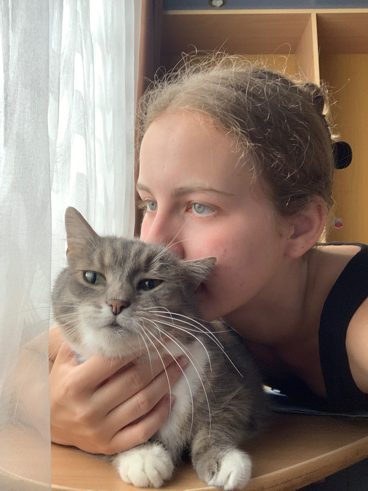

Books
Reading is the most stable part of my life: fiction, art, health, theory, and whatever book suddenly falls into my hands.
Heart of a Dog
Little Prince
While I am inspired to conduct my research, it's important to have other interests.
I have a happy life, I get to experience many things, on my own and in the company of friends and family.
Reading is the most stable part of my life: fiction, art, health, theory, and whatever book suddenly falls into my hands.
Films are fine, I guess. Who doesn't like to watch a good film with friends or after a long day? Animated films are superior, though.
Long-format storytelling allows me to get to know the characters, I love it.
So far I haven't travelled much, but I like trying coffee in different countries.
Languages come easy to me, I've gone through a number of them, and now I have two favourites.
I love cats. I also love watching Eurovision. These are not hobbies but are structural components of my personality.

This is Liza. She turned 19 this year.